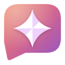

MemuAI в браузере
Подключение и настройки вашей панели
Подключение к приложению
Откройте MemuAI по ссылке и подтвердите подключение в приложении. Адрес и одноразовый код передадутся автоматически.
Подключить по коду или изменить адрес
В MemuAI откройте Настройки → Интеграции → Chrome и нажмите «Получить код подключения». Приложение должно оставаться запущенным.
Адрес указан в настройках интеграции MemuAI. Для другого профиля браузера нужен новый код.
История и модели
Основная модель и закрепления общие с активным профилем MemuAI. Модель открытого разговора меняется в самой панели.
Доступ к браузеру
Настройки синхронизируются с MemuAI автоматически.
Для чтения сайтов нужно также разрешение самого браузера. Обычные чаты и вложения работают без него.
Расположение панели
Закрепите MemuAI в меню расширений и нажмите его значок. Если панель открылась слева, выберите в браузере Внешний вид → Боковая панель → Справа.
Сторона встроенной панели задаётся в браузере.
При доступном приложении удаление подключения отзывает доступ в MemuAI. Для повторного подключения подтвердите запрос в приложении или получите новый код.